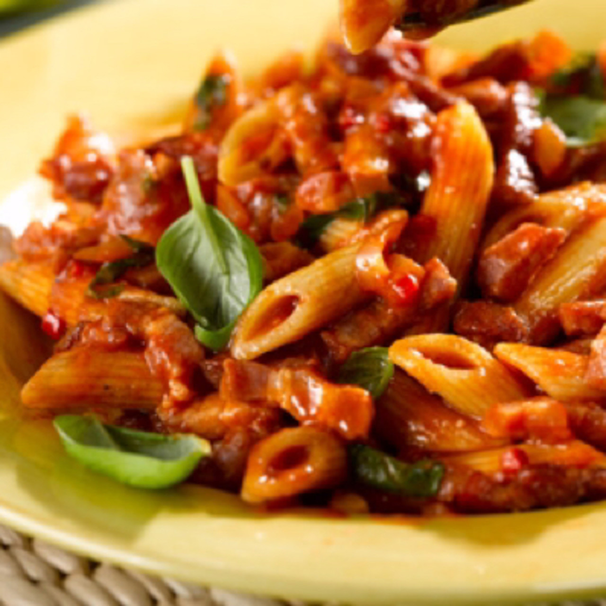

Pasta

Description
Pepperoni, olives, green
peppers, Prego® Traditional
Italian Sauce, and mozzarella
cheese are heated together to
top corkscrew pasta sprinkled
with Parmesan cheese.
Cook: 25 mins
Total: 25 mins
Servings: 8
Yield: 8 servings
Ingredients
-
1 (16 ounce) package corkscrew-shaped pasta,
cooked and drained
-
1 (4 pound 4 ounce) jar Prego® Traditional
Italian Sauce
-
1 cup thinly sliced pepperoni, cut in halves
-
2 medium green peppers, chopped
-
1 cup large pitted ripe olives, cut in halves
-
2 cups shredded mozzarella cheese
-
¼ cup Grated Parmesan cheese
Steps
-
Mix pasta, pasta sauce, pepperoni, peppers, olives
and mozzarella cheese in saucepot.
- Toss to coat.
- Heat through.
- Serve with Parmesan cheese.